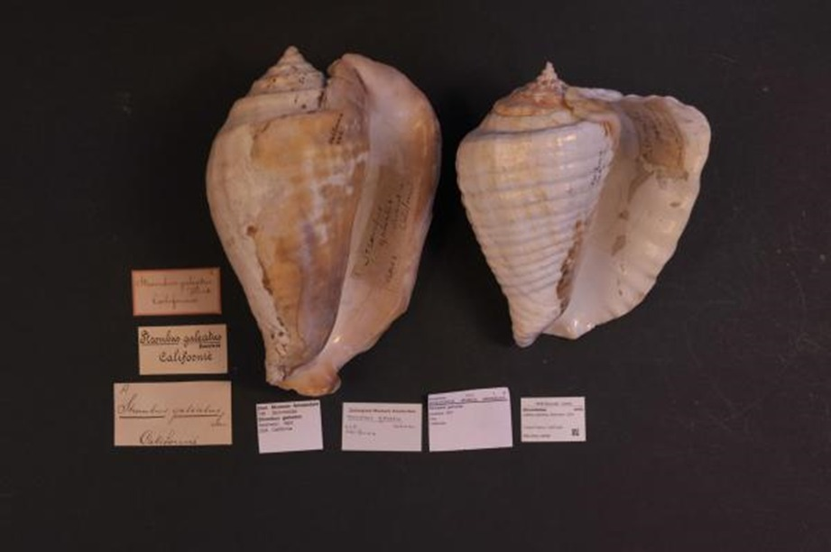

El caracol cambute es otro de los animales en peligro de extinción en el Salvador. Tiene una concha fuerte y gruesa y es de un
tamaño medio de 15 cm y de color amarillo
característico. Su contorno es oblongo y presenta una aguja pequeña típicamente erosionada.
En los últimos años, se ha detectado un número muy elevado de conchas vacías, por lo que se sabe que el número de estos moluscos
ha ido reduciéndose mucho y es de
especial preocupación.
Nombre científico: LOBATUS GALEATUS.
Habitad: Fondos rocosos, areniscos cerca de mangle.
Especie: Caracol de mar.
Origen: Oriental del Pacífico.
Descripción: : Un caracol grande, que alcanza hasta 25 centímetros de longitud, cuyo hábitat está principalmente en Los Cóbanos (Sonsonate) y en Maculis (La Unión)
se encuentra en peligro de extinción. Su nombre científico es lobatusgaleatus y se le conoce como caracol cambute.